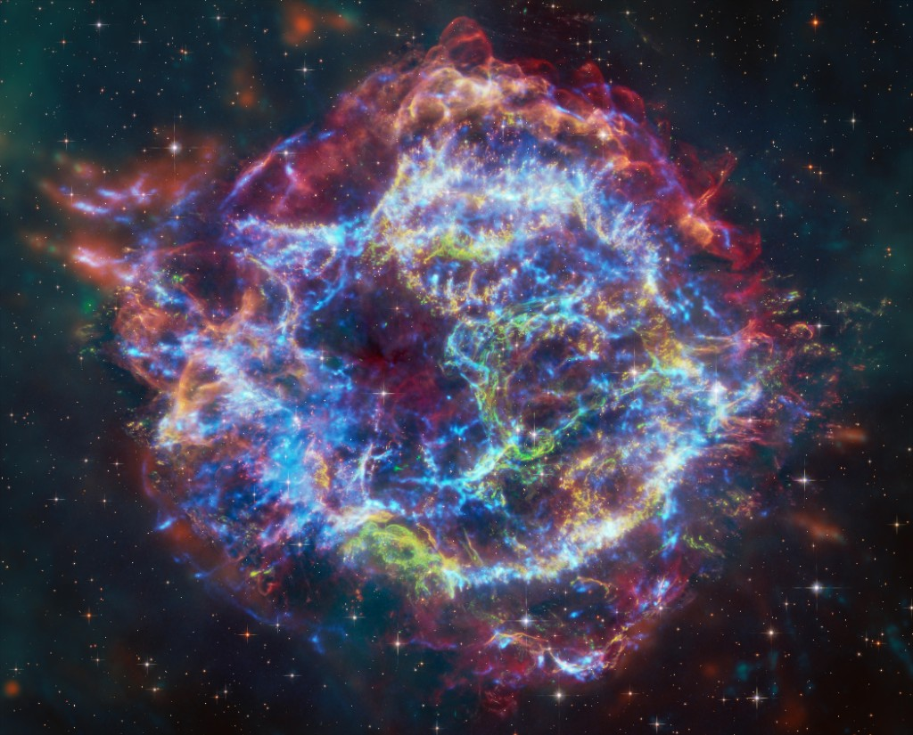
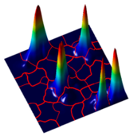
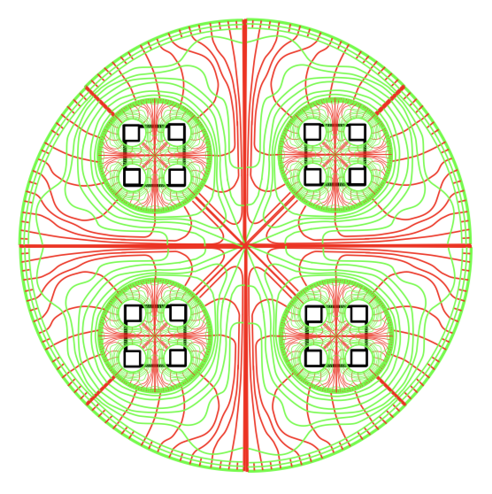

The images below were produced by collaborators across several years of joint work.
They illustrate mathematical and physical phenomena central to the research program —
wave localization, turbulence, fractal geometry — and are displayed here as art
as much as science.

Cassiopeia A
Supernova remnant imaged by the James Webb Space Telescope (NIRCam + MIRI composite).
An astrophysical illustration of wave phenomena and disordered structure at astronomical scale.
Image credit: NASA, ESA, CSA, STScI, D. Milisavljevic (Purdue), T. Temim (Princeton), I. De Looze (UGent).
Via Universe of Learning.

Marcel Filoche
Localization landscape for a disordered quantum system, showing five concentration peaks
and the Voronoi-like partition they induce. Produced by Marcel Filoche (École Polytechnique).
Turbulence simulation showing the complex interface structure and mixing dynamics
arising in a disordered fluid medium. Produced by Drummond Fielding (Flatiron Institute).
Preprint in preparation. Image used with permission.

Guy David
Field lines in a domain whose boundary exhibits a Cantor-set-like structure,
illustrating elliptic theory in domains with lower-dimensional boundaries.
Produced by Guy David (Université Paris-Saclay).